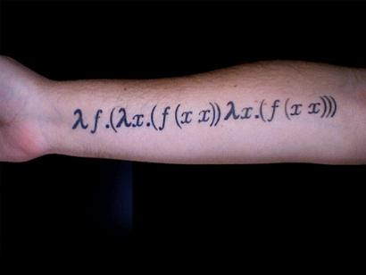

|
|
|
Sponsored Link •
|
Summary
In this episode I will talk about Scheme syntax, i.e. about the prefix notation and the infamous parentheses(!)
|
Advertisement
|
In the previous two episodes I have discussed a few important subjects such as availability of libraries, reliability of implementations, support in case of bugs, etc. However, I have not said anything about the language per se. In this episode I will talk more about the language, by starting from the syntax, with a discussion of the infamous parentheses. Lisp parens have been the source of infinite debates from the very beginning and always will be. As you probably know, LISP means Lots of Irritating Superfluous Parentheses, and Scheme has even more parentheses than other Lisps!
I did the mistake of writing Scheme code with an editor different from Emacs (the default scheme mode is terrible in my opinion). It has been like shooting in my foot. After a few weeks of suffering I came back to Emacs, I asked on comp.lang.scheme and comp.emacs and I was pointed out to excellent scheme mode, called quack.el and written by Neil Van Dike. Moreover, I have discovered how to augment the contrast of the parens (parens-edit mode) and I feel completely comfortable. But let me repeat that it is suicidal to try to edit Scheme/Lisp code without a good support from the editor. In my opinion this is the first reason why legions of beginners escape from Scheme/Lisp: who wants to be forced to learn Emacs only to write a few lines of code?
Of course, here I am exaggerating a bit, since there programmers that are able to write Lisp code even with vi and other editors, and there are even Scheme IDEs around (i.e. DrScheme, or a Scheme plugin for Eclipse): nevertheless I would still recommend Emacs to write Scheme/Lisp code, since Emacs itself is written in (Emacs) Lisp and that should tell something about its abilities to manage Lisp code. If you are coding in Common Lisp you should not miss SLIME, the Superior Lisp Interaction Mode for Emacs, which is a really really powerful IDE for Common Lisp.
However, even if I recommend Emacs and even if I think that the time spent to master it is time well spent, I do not think that forcing people to use a highly specialized tool to use a general purpose programming language is a good think. In theory, everybody should have the freedom to choose her editor, and it should be possible to program even in Notepad (even if it is a thing I do not wish to anybody!). This in theory: in practice, every professional programmer use some dedicated tool to write code, so if you don't want to use Emacs please make sure your editor/IDE has a good Scheme mode, otherwise consider changing your developing environment.
It is interesting to notice what Paul Graham - a big name in the Lisp community and the main author of Arc, a new language of the Lisp family recently released and implemented in PLT Scheme - says about the parentheses:
We also plan to let programmers omit parentheses where no ambiguity would result, and show structure by indentation instead of parentheses. I find that I spontaneously do both these things when writing Lisp by hand on whiteboards or the backs of envelopes.
Arc for the moment seems to require the parens, but it has a bit less parentheses than Scheme, as you can infer from the tutorial. It is clear that the parens are NOT necessary and one could imagine various tricks to reduce their number (I personally tried various approaches when I began programming in Scheme).
There is also an SRFI (SRFI-49: Indentation-sensitive syntax) that proposes to use indentation instead of parentheses taking inspiration from Python (!) The proposal should be considered as curiosity; discussing about indentation could have had some sense thirty years ago, at the time Scheme was designed. Nowadays, when 100% of Scheme code is written with parentheses, there is no point in not using them. Beginners would be penalized if they started using a style nobody uses.
In my (semi-serious) opinion, parens are a real initiation test: if a programmer cannot stand them than he is not worth of using Scheme/Lisp and he should address himself on inferior languages (i.e. all languages, according to what the majority of Schemers/Lispers think). In my experience the snobish attitude is more common in the Common Lisp community whereas in the Scheme community there is more respect for the newbie. Anyway, the initiation test works and the average Scheme/Lisp programmer is usually smarter than the average programmer in other languages, since only the most persistent survive.
As a Pythonista I do not believe in those tricks: I think every language should be made accessible to the largest possible public. That means many second rate programmers will be able to learn it, but this is an opportunity, not an issue: the existence of poor programmers increases the number of available positions, since you need people to fix their mistakes! Otherwise how would you justify the number of job offers for Java and C++? (I said I was only semi-serious, don't take this personally, eh? ;)
Anyway, when after long suffering one has learned to manage with parens, there is no way back: once you have mastered a good editor the parens give you strong advantages when writing code. One of the main ones is automatic indentation with a single keypress. No more snippets of code send via e-mail and made unredable by the newlines added by the mail program; no more time wasted on reindenting code when refactoring.
Of course, nothing is perfect, and you may forget a paren here and there, but overall I will definitively admit that in the long run the parentheses pay off. On the other hand, in the short run, they make life much harder for the newbies; I still think that an optional syntax with less parentheses to be used by beginners or when using a poor editor would make sense, in a new Scheme-like langauge. But it is too late for Scheme itself: for the best or for the worst Scheme is a language full of parentheses and it is better to take full advantage of them.
Nota Bene: new languages based on s-expressions are born every day (the newcomers are Arc, which I have already cited, and Clojure, which runs on the Java platform and is very interesting). For those new languages it may have sense to investigate the available options. The best reference discussing alternative to parentheses that I know of is a paper by David Wheeler. It is an interesting reading, you may want to have a look at it, if you are interested in the topic.
It is time to say something about another peculiarity of lispish language, the prefix syntax. In Scheme you do not write 1+1 as you have learned to write from elementary school. Instead, you write (+ 1 1). The sum operator + is written at the beginning, as a prefix, and not in the middle, as an infix. I never had any trouble with infix syntax (I had trouble with parens instead) since it is something perfectly consistent: in Python the function name is written before the arguments too.
Actually, when you write 1+1 in Python, you should think of it like a shortcut syntax for the full prefix syntax int.__add__(1,1), therefore the prefix syntax should not come as a surprise to a Pythonista. I was disturbed by the fact that there is no standard library functionality in Scheme to simplify the writing of mathematical formulas. I would have welcomed a standard macro able to convert infix syntax to prefix syntax in mathematical formulas, something like
(with-infix a+b*c) => (+ a (* b c))
Such a macro is standard in Common Lisp, but not in Scheme. Apart from forcing the students to write a parser to convert infix syntax to prefix syntax, I do not see the advantages of such a choice. This is however indicative of the difference between Python and Scheme: Python tries hard to make common tasks easy by providing a large library (the famous batteries included concept), whereas Scheme does not care.
Probably the real issue is that it is impossible to get consensus in the committee about the size of the standard library and about what to include in it, but the final result is that user is stuck with a very small standard library. Anyway, I should say that the standard library was much smaller before the R6RS, so the situation is improving. Moreover, concrete implementations often have a lot of useful (but non-portable) libraries.
But let me go back to syntax. It must be noted that the prefix syntax has enourmous advantages when macros enter the game. The absolute regularity of Scheme/Lisp programs, which are sequences of s-expressions of the form
(arguments ...)
where the arguments in turn can be nested s-expressions makes the automatic generation of code extremely effective. I will discuss this point in detail in future episodes; here I can anticipate that Scheme code is not meant to be written by humans, it is intended to be written automatically by macros. Only after having understood this point you will realize that the parentheses are a Good Thing (TM). I needed a few months to understand it, others never understand it and they quit Scheme with disgust.
If you will be able to pass the initiation test you will see that s-expressions (which are usually but not necessarily associated to parentheses) make sense. Once understood, the traditional (infix) notation becomes an obstacle more than a help. Moreover the total uniformity of Scheme programs has a kind of beauty and elegance in itself. No useless syntax, no boilerplate code, you breath an air of Zen minimalism.
Have an opinion? Readers have already posted 6 comments about this weblog entry. Why not add yours?
If you'd like to be notified whenever Michele Simionato adds a new entry to his weblog, subscribe to his RSS feed.
 | Michele Simionato started his career as a Theoretical Physicist, working in Italy, France and the U.S. He turned to programming in 2003; since then he has been working professionally as a Python developer and now he lives in Milan, Italy. Michele is well known in the Python community for his posts in the newsgroup(s), his articles and his Open Source libraries and recipes. His interests include object oriented programming, functional programming, and in general programming metodologies that enable us to manage the complexity of modern software developement. |
|
Sponsored Links
|